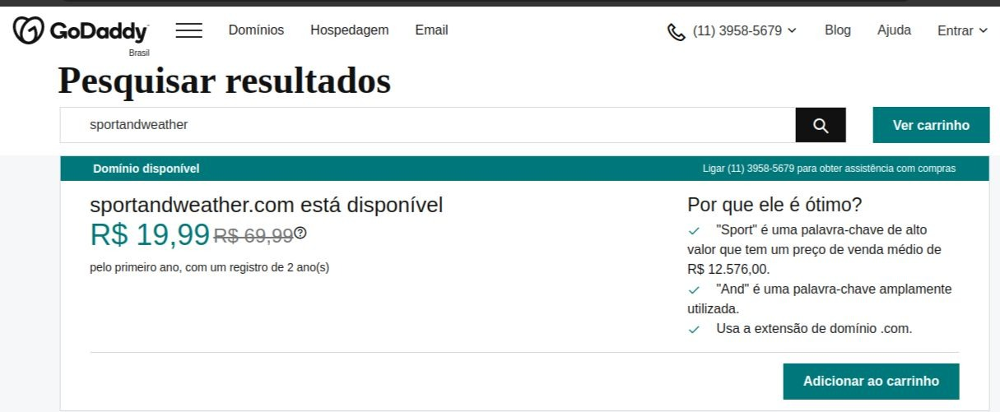

About the site
Site Name
The name of the site was designed so that people who like to practice sports (and need to check the weather conditions) can identify with the chosen domain.
Site Purpose
Climatic conditions can interfere with the progress of sporting events. The Sports and Weather website has the mission of providing information on the weather so that sportspeople can plan their tournaments on days more favorable to the sport.
In a simple way and using secure sources, the website is a valuable tool for programming sports practice in open environments.
Logo

Domain
